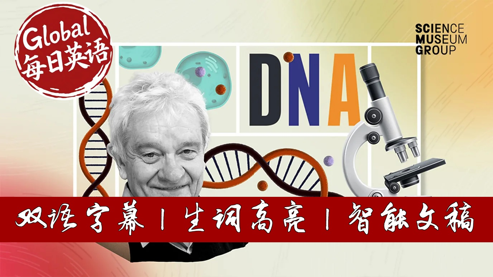

【BBC精选｜诺贝尔得主：DNA的发现改变了世界，也让我找到了亲生父亲】
Summary: DNA is the fundamental genetic material in all known life, containing vast amounts of information that could theoretically store all digital data on Earth. Nobel laureate Paul Nurse explains how DNA's double helix structure, discovered in 1953, enables genetic inheritance and identity verification through DNA fingerprints. The sequencing of the human genome in 2000 revolutionized fields from criminal justice to ancestry tracing, while CRISPR gene editing now offers potential cures for genetic diseases. DNA analysis continues to reveal profound insights into human evolution, health, and even personal family mysteries.
摘要： DNA是所有已知生命的核心遗传物质，其信息存储能力足以容纳全球数字数据。诺贝尔奖得主保罗·纳斯阐释了DNA双螺旋结构如何支撑遗传机制，并通过DNA指纹技术实现身份认证。人类基因组计划的完成推动了司法、祖源追溯等领域的变革，CRISPR基因编辑技术为遗传病治疗带来新希望。DNA分析不仅揭示人类进化与健康奥秘，甚至能解开个人身世之谜，持续重塑我们对生命的认知。

⏱️ Estimated Reading Time: 8 min.
📚 四级生词 📚 六级生词 📚 雅思生词 📚 托福生词 📚 专八生词 📚 SAT生词 📚 考研生词 📚 GRE生词
DNA contains the genetic code found in all known life on our planet.
In each of nearly all of your roughly 30 trillion cells, there are 6.4 billion letters of DNA.
It's powerful stuff.
If the DNA in all of your cells was used to store computer data,
it could hold the equivalent of all the digital data we currently store on Earth.
I'm Paul Nurse and I spent much of my working life thinking about DNA.
In particular, how it's copied and distributed inside cells every time they divide.
I was awarded the Nobel Prize for this work in 2001.
Our understanding of deoxyribonucleic acid or DNA has grown enormously since its discovery in the 19th century.
DNA was shown to be responsible for genetic inheritance in 1944.
Then in 1953, its structure was revealed using x-rays.
And DNA turns out to be a stunningly elegant molecule.
What you're looking at is the original DNA model currently on display in the Science Museum in London.
It shows two long chains of molecules spiraling around each other in a double helix,
like a twisted ladder.
The rungs are pairs of four chemicals marked as AGCNT.
Determining the order of these chemicals, their sequence is known as sequencing.
Being able to describe the DNA sequence allows scientists to identify important differences between individuals.
These unique differences have become the basis for what is known as our DNA fingerprint.
The first ever recorded DNA fingerprint was made in 1984 by my friend Alex Jeffries at the University of Leicester.
Using DNA taken from his technician, Vicki Wilson,
he described not only which parts of her DNA came from her mother and which from her father,
but also the unique genetic code she possessed, one shared by no other human being.
DNA fingerprints can prove identity, how we are related and more.
DNA testing of hair, skin cells or blood found at crime scenes
is now the gold standard for conviction or exoneration of suspects.
It has revolutionized the criminal justice system.
In 2000, the first draft human genome, all the DNA needed to build a human being, was unveiled.
And with the ability to read genomes came new insights
into how the human body works and how we evolve.
Analyzing DNA sequences has now reached the public in the form of commercial genetic testing by companies such as Ancestry and 23M.
By sending a saliva sample and a fee of course, anyone can receive a report containing information such as where their ancestors were from and who they are related to.
This ability to analyse DNA has had a personal consequence for me.
It's a twist of fate that although I have a long career in genetics,
I never realised that my own family had a DNA secret.
When I was in my 50s, I found out that the person I thought was my sister, was in fact my mother,
my parents, the people who raised me were in fact my grandparents.
For a long time, the identity of my father remained a mystery,
but amazingly, now in my 70s, recently it was possible to identify him through DNA testing.
Analyzing DNA has also enabled scientists to do many extraordinary things,
ranging from predicting genetic diseases to studying extinct members of the human family
like Neanderthals and extinct animals like mammoths.
A new frontier in genetics is CRISPR,
a gene editing tool that works like molecular scissors,
enabling scientists to cut and paste fragments of DNA within cells.
This means genetic diseases such as hemophilia, muscular dystrophy and cancers,
in principle might be corrected by editing the DNA of human embryos.
This has the potential to improve many people's lives, though more research is still required because like all new therapies, they have to be shown to be safe.
There are also questions that need to be answered about making changes that can be passed on to future generations.
But societies have navigated the challenges that come with new scientific technologies before.
DNA is the stuff of life.
It is inevitable that the more we research, the more we will understand about ourselves and the living world and the more power we will have to change it.
All this work with DNA will give insights into human development,
allow us to study extinct species and help doctors to treat diseases like cancer with medicine better personalized for everyone's unique genetic makeup.
And we are also starting to make new genetic materials
creating new synthetic proteins that could be used for example to help break down pollutants or to reduce greenhouse gases.
Seven decades after the structure of DNA was first revealed,
the DNA revolution continues to be exciting.
It shows no signs of slowing down.